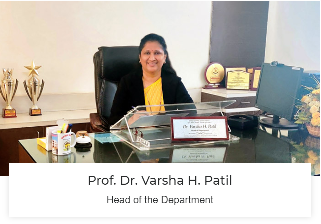

<div class="container">
    <div class="content">
        <div class="heading">
            <h1 style="color: #fff;">Messege From HOD's Desk</h1>
        </div>
        <div class="hod_img">
            <div class="img_box">
                
            </div>
        </div>
        <div class="hod_info">
            <br>
            <p>The department of Computer Engineering at Matoshri College of Engineering and Research Centre, Nashik is one of the pioneer departments established in year 2008. The department offers four years undergraduate programme with intake of 120 from academic year 2022-23, two years postgraduate programme with intake of 18, and a Doctoral (Ph.D) programme in Computer Engineering. <br> <br>

                Curriculum followed is as prescribed by affiliated university. Curriculum is revised at university periodically after 4 years by keeping an eye on the technological advancements and industrial requirements globally. Curriculum is blend of basic science and mathematics courses, core, and advanced domain courses, set of elective courses for learner to choose as per their interest, audit courses, communication skills development and project work. <br> <br>
                
                Head of the department, Professor Dr. Varsha Patil is associated with Engineering Education since August 1990. She has 30 years of teaching experience. She is one of the renowned academicians who have developed herself to be wealth of experience in education and academic administration. She is chairman (Board of Studies, Computer Engineering) since 2018 at Savitribai Phule Pune University. <br> <br>
                
                The Department has well-furnished laboratories equipped with state-of-the-art hardware and software resources, classrooms, department library, and faculty rooms. <br> <br>
                
                The department has blend of experienced and young teachers. Teachers along with imparting knowledge and building skills, mentor students for their overall development and for imbibing morality and values. The department has appreciable track record of placement in industries. Many of our alumni are working at key positions in industries in India and abroad. <br> <br>
                
                An active club for students named “Pinnacle Club” is a platform for students for running various activities and exhibiting their talent. The students are motivated to organize co-curricular and extracurricular activities. Various activities run include expert talks, technical events, contests, seminars, workshop, industry visits, and social visits under the guidance of faculty through Pinnacle club and CSI student branch. Participation and organization of these events cultivates among them the leadership skills, develops team spirit and co-operative nature through which the students learn many aspects of management. <br> <br>
                
                Department is continuously working for all-round development as per guidelines of affiliated university, ‘Savitribai Phule Pune University’. The department is in pursuit to achieve the stated vision by striving to meet the mission statements, contributing towards attainment of the institute vision. <br> <br>
                
                You are most welcome to the Department of Computer Engineering as a learner (UG/PG/PhD student),or expert,or mentor; we desire to contribute and witness your bright career.</p> <br>
            <div class="cont_box">
                <h4>-Prof. Dr. Varsha H. Patil</h4>
                <p>HOD</p>
            </div>
            <div class="footer">
                <hr>
                <div class="foot_cont row">
                    <p class="col-lg-3">Contact : </p>
                    <p class="col-lg-3"><svg xmlns="http://www.w3.org/2000/svg" height="24" viewBox="0 -960 960 960" width="24"><path d="M280-40q-33 0-56.5-23.5T200-120v-720q0-33 23.5-56.5T280-920h400q33 0 56.5 23.5T760-840v720q0 33-23.5 56.5T680-40H280Zm0-120v40h400v-40H280Zm0-80h400v-480H280v480Zm0-560h400v-40H280v40Zm0 0v-40 40Zm0 640v40-40Z"/></svg>9881024325</p>
                    <p class="col-lg-3"><svg xmlns="http://www.w3.org/2000/svg" height="24" viewBox="0 -960 960 960" width="24"><path d="M798-120q-125 0-247-54.5T329-329Q229-429 174.5-551T120-798q0-18 12-30t30-12h162q14 0 25 9.5t13 22.5l26 140q2 16-1 27t-11 19l-97 98q20 37 47.5 71.5T387-386q31 31 65 57.5t72 48.5l94-94q9-9 23.5-13.5T670-390l138 28q14 4 23 14.5t9 23.5v162q0 18-12 30t-30 12ZM241-600l66-66-17-94h-89q5 41 14 81t26 79Zm358 358q39 17 79.5 27t81.5 13v-88l-94-19-67 67ZM241-600Zm358 358Z"/></svg>0253-2406621</p>
                    <p class="col-lg-3"><svg xmlns="http://www.w3.org/2000/svg" height="24" viewBox="0 -960 960 960" width="24"><path d="M160-160q-33 0-56.5-23.5T80-240v-480q0-33 23.5-56.5T160-800h640q33 0 56.5 23.5T880-720v480q0 33-23.5 56.5T800-160H160Zm320-280L160-640v400h640v-400L480-440Zm0-80 320-200H160l320 200ZM160-640v-80 480-400Z"/></svg>varsha.patil@matoshri.edu.in</p>
                </div>
            </div>
        </div>
    </div>
</div>